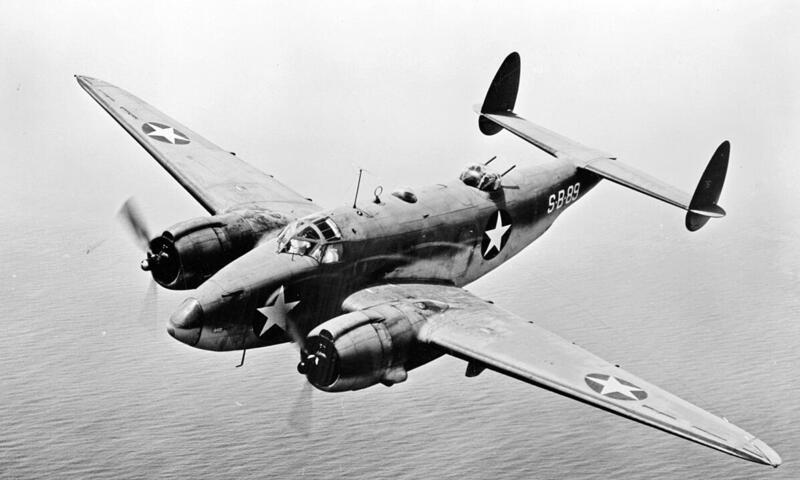
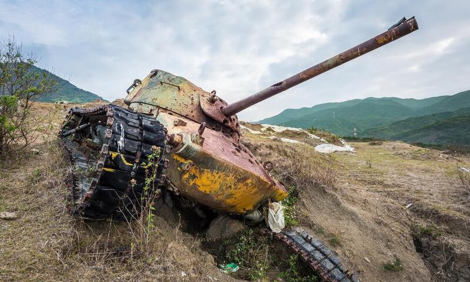

Втора́я мирова́я война́ — война двух мировых военно-политических коалиций, ставшая крупнейшим вооружённым конфликтом в истории человечества. В этой войне участвовали 62 государства из 74 существовавших на тот момент (80 % населения Земного шара). Боевые действия велись на территории Евразии и Африки, а также в водах всех океанов. Это единственный конфликт, в котором было применено ядерное оружие. В результате войны погибло около 70 миллионов человек, большинство из которых — мирные жители.
Началом Второй мировой войны считается 1 сентября 1939 года, когда нацистская Германия начала вторжение в Польшу. За этим, 3 сентября, последовало объявление войны Германии со стороны Великобритании и Франции.
17 сентября советское правительство ввело свои войска на территории Западной Белоруссии и Западной Украины, входившие в состав России до 1917 года, чтобы взять под защиту белорусское и украинское население в связи с распадом польского государства и не допустить дальнейшего продвижения германской армии на восток (эти земли были отнесены к советской «сфере интересов» согласно советско-германским секретным протоколам 1939 года).
Германия стремительно завоевала Данию и Норвегию (апрель — июнь 1940), Францию и страны Бенилюкса (май — июнь 1940), Югославию (апрель 1941). С июня 1940 года в войне участвовала фашистская Италия, помогавшая Германии во Франции и в Греции.
Некоторые страны добровольно стали союзниками Германии и Италии: Венгрия, Румыния и Болгария, а также в некоторой степени Финляндия. На стороне Германии принимала участие и Австрия, присоединённая к Третьему рейху в 1938 году в результате аншлюса.
Важные политические последствия в начальный период Второй мировой войны имели воссоединение с СССР Бессарабии и вхождение в него Северной Буковины, заключение соглашений в сентябре – октябре 1939 года о взаимной помощи с прибалтийскими государствами и последовавшее в августе 1940 года вхождение прибалтийских государств в состав Советского Союза.
В результате советско-финляндской войны 1939–1940 годов, хотя и ценой больших жертв, была достигнута главная стратегическая цель, которую преследовало советское руководство, — обезопасить северо-западную границу.
22 июня 1941 года Германия и её союзники осуществили вторжение в СССР. Великая Отечественная война стала решающей в дальнейшем развитии событий Второй мировой войны в Европе, а Советский Союз понёс наибольшие потери в этой войне.
В Азии главным очагом агрессии стала Японская империя, желавшая доминировать в этом регионе. Ещё с 1931 года она несколько раз атаковала соседний Китай, в котором шла гражданская война. 7 июля 1937 года Япония развязала против Китая полномасштабную войну.
7 декабря 1941 года японская авиация и флот атаковали Перл-Харбор, что привело к вступлению в войну против стран «Оси» Соединённых Штатов Америки — возник Тихоокеанский театр военных действий. На стороне Японии в боевых действиях участвовал и Таиланд.
В 1942–1944 годах Советский Союз одержал ряд военных побед, ослабивших германскую армию, что привело к переходу на сторону антигитлеровской коалиции Финляндии, Румынии и Болгарии. Одновременно с этим Италия и Германия были вытеснены из Северной Африки.
В Италии произошёл государственный переворот, Муссолини был арестован, новое правительство Италии заявило о выходе из войны. В июне 1944 года войска США, Великобритании и военные формирования Свободной Франции открыли второй фронт в Европе, высадившись в Нормандии, освободив Францию и другие страны Западной Европы, а затем вошли на территорию Германии.
В 1945 году произошёл окончательный коллапс стран «Оси». Битва за Берлин привела нацистскую Германию к капитуляции. 8 мая (по московскому времени — 9 мая) 1945 года нацистская Германия подписала акт о капитуляции. Была окончена Великая Отечественная война.
В июле 1945 года США отправили Японии Потсдамскую декларацию, которую та отклонила. Вслед за этим последовали атомные бомбардировки Хиросимы и Нагасаки и вступление в войну СССР. 2 сентября 1945 года Япония подписала акт о капитуляции — это стало окончанием Второй мировой войны.
Неизбежность Второй мировой войны была предопределена характером Версальско-Вашингтонской системы международных отношений — мирового порядка, основы которого были заложены по завершении Первой мировой войны (1914–1918) Версальским мирным договором, договорами с союзниками Германии, а также соглашениями, заключёнными на Вашингтонской конференции 1921–1922 годов.
Победители Первой мировой войны со своими союзниками разделили Европу на своё усмотрение. Распады Российской империи и Австро-Венгерской империи привели к возникновению девяти новых государств. Отсутствие четких границ порождали большие споры: побеждённые страны хотели вернуть свои границы, а победители не желали расставаться с присоединёнными территориями. К сожалению, все территориальные споры в Европе всегда решались с помощью оружия.
Побеждённые страны были лишены своих колоний, которые были постоянным источником пополнения казны. В самих колониях местное население поднимало освободительные восстания с вооружёнными стычками. В результате снова возникли обострения экономических и идеологических противоречий между ведущими мировыми державами, и в 1930-х годах образовались два очага войны — в Европе и на Дальнем Востоке.
Непомерные репарации и ограничения, наложенные победителями на Германию, способствовали развитию в ней сильного националистического движения, в котором взяли верх крайне радикальные течения. С приходом Адольфа Гитлера к власти в 1933 году Германия превратилась в опасную для всего мира милитаристскую силу.
14 октября 1933 года Германия вышла из Лиги Наций и отказалась от участия в Женевской конференции по разоружению. Март 1938 года — аншлюс Австрии. Осень 1938 года — оккупация части Чехословакии, весной 1939 года — вся Чехия и Клайпедская область у Литвы.
Фашистская Италия проводила агрессивную политику: оккупировала Эфиопию (1935–1936), вышла из Лиги Наций (1937), аннексировала Албанию (апрель 1939).
Стремление к переделу мира было характерно и для милитаристской Японии. 25 ноября 1936 года Германия и Япония заключили Антикоминтерновский пакт; 6 ноября 1937 года к нему присоединилась Италия. Оккупация Маньчжурии началась в 1931 году. 7 июля 1937 года началась Японо-китайская война. Советско-японские пограничные конфликты 1938–1939 годов (Хасан, Халхин-Гол) грозили перерасти в полномасштабную войну.